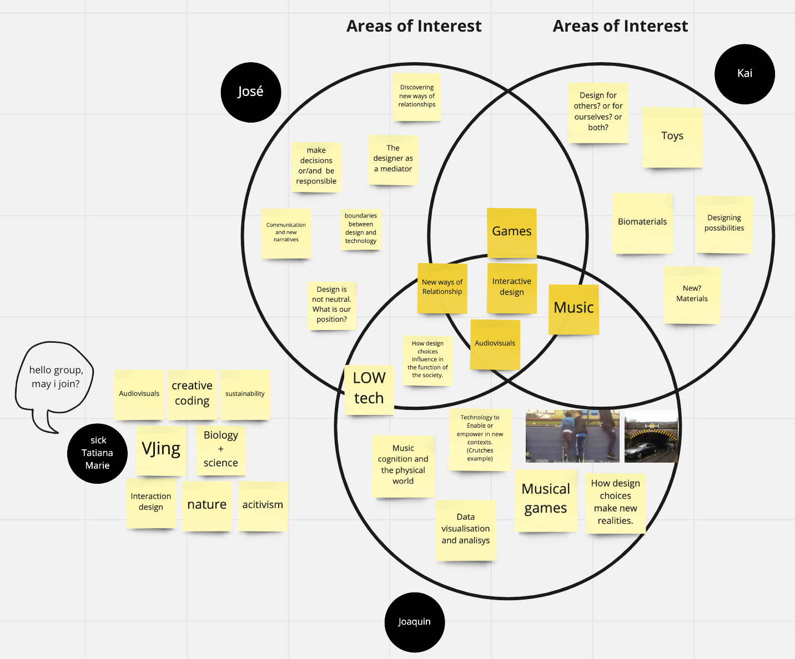

fabacademy challenges
Monthly Micro Challenges
Sensorial Decisions
What I learned
Unfortunately, I was sick for the first 2 days of the challenge, which meant that I lost a lot of time and I came to university a bit confused on Thursday, not knowing where to go and what to do. I decided to take a look at the Miro board and ask some groups some questions about their project and whether they needed a hand or not.
Ultimately, I joined the "decision making through art and music" group. I was a bit scared to just butt in because I hadn't contributed at all in the past few days, but I learned that during fab challenges, any group is looking for help.
I also learned a bit more about Arduino code, material conductivity and making circuits.
I would have liked to learn more p5.js and processing, but our group wasn't really focusing on that aspect. I was sad that I missed Wednesday's lesson because of my fever, but I think I will try to implement it on future projects.
My contribution to the project
On Thursday, I was everybody's assistant at first, to understand the project better. I helped Kai design the base board in Rhino and laser cut it, helped José test out the cables and conductivity of the circuit with various materials (we found out one of the inputs wasn't working) and then prototyped an initial board using a mix of aluminium and copper with Juaco. All together, we also brainstormed how to create the painting experience and the goals for our project.
Our goals for this challenge:
- Visualize decision making through sound and drawings
- Work with electronics, Arduino, creativity and conductivity
- Explore unknown mediums: pure data, arduino, vinyl cutting copper
- Create a project that is realistic and doable in 4 days
- Exhibit the outcomes of decision making
- Generating awareness about the consequences of our actions
- Throughout all of this, José and I documented the process and slowly updated the repository.
The next day was when I found my true utility, during the testing of our board. We filmed various people using it for about 2 hours, then I had an hour to edit a short video before we presented. The video is at the top of this post.
Explain how is linked to your research Project

Our common areas of interest are music, games, communication, interactive design and low tech with the purpose of seeking new ways of relationship between humans and non-humans. Through this, we are developing an artifact that allows human interaction, guided by different sounds, creating a final output of sound-paintings. The human interaction (input) is about drawing and being guided by the sounds. The final output is the drawing itself.
For me personally, it got me thinking about the way we can use different "buttons" or surfaces to control signals and sounds. I am interested in pursuing a VJ set for future projects, so this got me to understand the basics of how to compatibilise that with arduino.
Link to full repo is here.